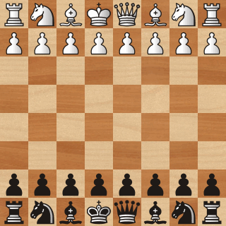
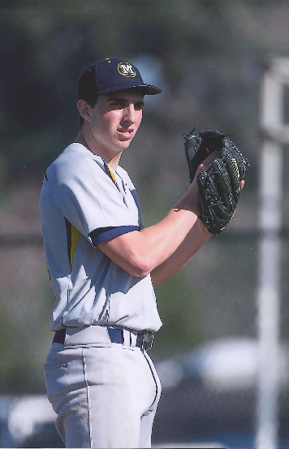

Hi, I'm Chris Atkeson. I'm a data analyst and a recent graduate of UC Berkeley. This is my personal website.
About four years ago I began playing online chess on chess.com. Starting at a blitz elo of just 600, I climbed my way up to a 2200 rating and a 99.8th percentile site ranking. I have held an even score against national masters for the past year.
Below is a 5-minute blitz game I played against National Master finec2 (2290 USCF) on chess.com. I am playing with the black pieces. White resigned after 15. Nxd1.

Click here to go to my chess.com profile. Add me as a friend if you would like to play some games.
In highschool I was one of three starting pitchers for my baseball team. I finished my senior year with a 2.72 ERA and second team all league honors. At Berkeley I joined the club baseball team. I finished with a 2.22 ERA and second team all region honors. I currently play in a men's league.
I have played piano since I was young and continue to practice and learn new pieces to this day. My favorite composers are Beethoven, Rachmaninoff, and Chopin. I have learned several pieces from Beethoven's sonatas and some of Rachminoff's work. I am currently learning some Scott Joplin ragtimes. Here is a clip of me playing the second movement of Beethoven's Moonlight Sonata.